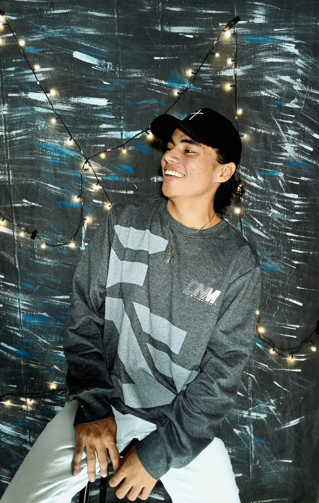

Soy Ingeniero de Software egresado de la Universidad de Cartagena. Pero mi perfil no nace de una sola disciplina — nace del cruce entre varias.
La ingeniería me dio una forma de pensar: dividir problemas, entender sistemas, construir soluciones que funcionan. La fotografía me dio una forma de observar: aprender a notar la luz, el gesto, el instante que cuenta una historia entera. Y la música — el piano, el trabajo en contextos de worship — me dio una forma de crear con otras personas: escuchar, ajustar, sostener un momento en equipo.
No trato estas áreas como proyectos separados. Son la misma manera de acercarme a cualquier problema: entender primero, después construir con cuidado.
Resolver problemas reales, automatizar lo repetitivo y convertir ideas en sistemas que funcionan.
Capturar personas, momentos y emociones — no solo imágenes bonitas, sino historias.
Piano, worship y producción audiovisual: crear y sostener momentos junto a otros.